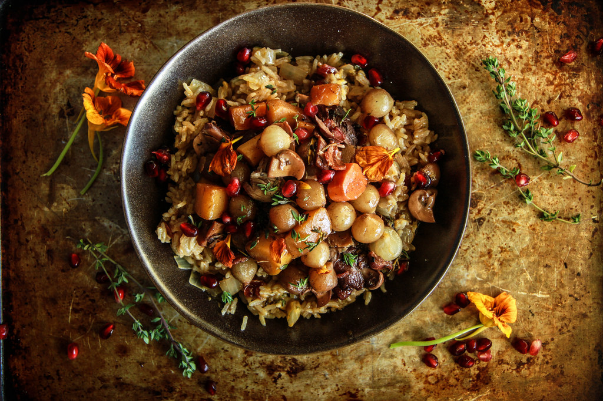

Coq au Vin is a classic French dish where chicken is braised in red wine with mushrooms, onions, and bacon, infused with herbs like thyme and bay leaves. This rustic yet elegant dish exemplifies French country cooking at its finest, transforming simple ingredients into a rich, complex meal that's perfect for a special dinner.
Ingredients
- 8 bone-in, skin-on chicken thighs
- 6 oz bacon, diced
- 2 cups red wine (Burgundy preferred)
- 1 cup chicken broth
- 1 large onion, diced
- 2 carrots, sliced
- 2 cloves garlic, minced
- 8 oz mushrooms, quartered
- 2 tbsp tomato paste
- 2 tbsp butter
- 2 tbsp all-purpose flour
- 4 sprigs fresh thyme
- 1 bay leaf
- Salt and pepper to taste
- Fresh parsley for garnish
Preparation
This classic French dish requires several steps but is well worth the effort. You'll start by browning the bacon and chicken, then building layers of flavor with vegetables, wine, and herbs. The dish simmers slowly, allowing all the flavors to meld together into a rich, complex sauce.
Chef's Tips
- Marinate the chicken in the wine overnight for even more flavor.
- Use a good quality wine that you would enjoy drinking.
- For the most authentic flavor, use a Burgundy wine.
- Serve with crusty French bread or over mashed potatoes to soak up the delicious sauce.